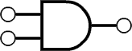

AND Gate
What is an AND Gate?
An AND gate is a basic digital logic gate that implements logical conjunction – it gives a true (1) output only when all the inputs are true.
Symbol for AND gate:

Try the AND gate by toggling the two inputs below. The output will turn on only if both inputs are on:
0
A
+
0
B
AND
Output
0